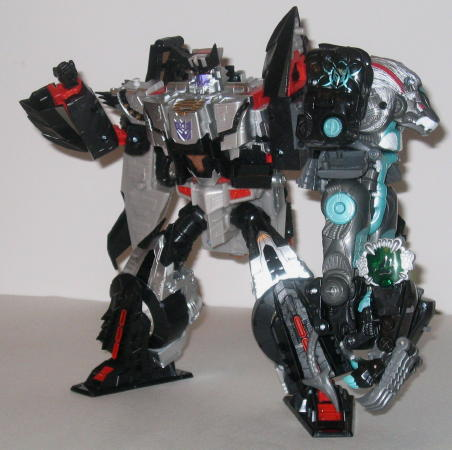

(NOTE: Because this is a repaint, this is not a full-blown review. This mainly covers any changes made to the mold and the color scheme, and merely compares it to Cybertron Leobreaker. For a review on the mold itself, read the review of Cybertron Leobreaker here .)
In the grand ol' tradition of "evil Primes" of the past few series, Nemesis Breaker takes the general "evil Nemesis" Prime color scheme and applies it to the Leobreaker mold, given that Nemesis Breaker is an evil clone of the lion Autobot. In fact, color-for-color, the color scheme is the exact same on this toy as it is on RiD Scourge , with the sole addition of a little bit of white-- gray and black make up the main "dark, evil" colors, with teal also being a major color that serves to give a nice contrast to all the black and gray while still retaining the figure's cold-toned color pallete. The silver mane looks incredible, especially with the red streaks of "wire" going through it. Although the scheme has been used quite a bit, it's still an awesome color combination, and using it on this mold doesn't change that. The robot face also seems to look a bit better in this scheme that it did on Leobreaker. There's also a very neat-looking Decepticon emblem painted on his right shoulder, with lots of little energy tendrils around it to make it look more eeevil. However, besides that emblem design, Nemesis Breaker is otherwise a strict color swap in terms of where his paint apps are-- although he is an evil clone, I still would've liked to see a bit more differentiation in where the paint apps were placed for a $20 repaint.

Given that Leobreaker
can combine with
Optimus Prime
, it's only natural
that his evil clone can combine with
Galvatron
.
(He can also combine with Optimus Prime, which makes no sense, or
Megatron
,
but the latter doesn't look as cool, considering the conflicting color
schemes.) Galvatron's "Dark Claw Mode" looks just as iffy as Prime's "Savage
Claw Mode" does, but the color schemes of the two toys in Dark Claw Mode
goes together a LOT better than in Prime's Savage Claw Mode-- the only
major difference between Galvatron and Nemesis Breaker's color schemes
is the prevalence of teal on the latter. However, one additional problem
exists with Dark Claw Mode that didn't with Savage Claw Mode, that being
that Galvatron's hip joints simply aren't quite sturdy enough to support
the added weight of Nemesis Breaker-- thus, it's nearly impossible to get
Galvatron to stand up for a reasonable period of time without slumping
sideways at the hips. Needless to say, this is a big downer. Otherwise,
the Dark Claw arm has the same articulation and drawbacks that the Savage
Claw arm has on Prime.
No mold changes have
been made to Nemesis Breaker.
Nemesis Breaker is a
nice repaint of Leobreaker, in the tradition of "evil clone" Decepticons
that have emerged since the turn of the millennium. The mold itself is
definitely below-average for a Cybertron toy, though, and Dark Claw Mode
isn't that great of a combination either, so there's several other toys
in the line I'd recommend before Nemesis Breaker.
Review by Beastbot